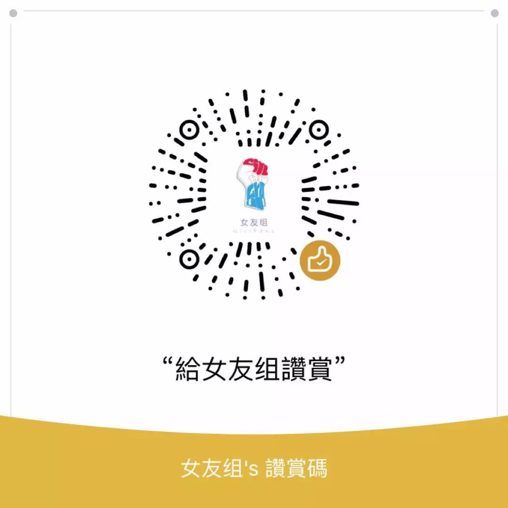

线下讲课（周日）| 夜紫：不要说我刻板印象，我理想中的身体，是一个纤细小胸少女体
夜紫小时候的照片，妖娆的姿势。
听TA
说
与夜紫的认识，是这次加了她微信跟她沟通课程内容的时候，听到她的语音后，才想起来的。我们只见过一面，在某次会议中，那时候在人群中一眼就被她吸引，她长得很高大，穿着色块丰富的裙子，看的出来是一个温柔的妹纸。会议尾声，我们一起拼车去高铁站才说上话，那时候觉得她懂得很多，几句谈吐就让我觉得她很有涵养，同时有点距离感。直到这次的课程合作，我们有近3周的交流跟进，发现她是很爱分享的人，跟我谈她的近况，她喜欢的偶像... 让我期待，这节看似沉重但由可爱的夜紫来分享会是什么感觉！
—— 风景
12后悔当时没能好好的
和女孩子们谈个恋爱吧。
+
Q
你的昵称好唯美，让人联想到夜幕降临前的天空，这个名字有什么故事吗？
夜紫：这个名字还真没什么太多的故事，只是当时取id的时候我原本想的一个id跟别人重名了，然后就改了这个名字。实际上是我中文名字的首字母的变音吧,对，真的没什么故事。
Q
你的“自我认同”历程是怎样的呀？这里面有什么让你难忘的事件吗？
夜紫：自我认同这方面和很多的跨性别女孩子都差不多，刚开始觉得自己是个gay，后面才认识当自己是女生。让我难忘的事情嘛……大概是，其实高中开始就有对女生有好感，包括大学的时候也有女生对我表白过，但当时一直觉得自己是gay，嗯，不能喜欢女生，当后来对自己有进一步的了解，才知道原来自己是泛性恋，后悔当时没能好好的和女孩子们谈个恋爱吧，现在老阿姨了，更不容易有对象了。
Q
什么时候发现自己并不孤单，进入到跨儿的社群？
夜紫：其实最早接触在零几年时候就有接触了，当时是网上的论坛。不过那个时候我一看别人的帖子为多，自己很少发帖子。而且我完完全全认识清楚自己到底是谁，也就近几年的事。真正的参与到所谓的一些沟通交流中来说，应该其实也就这几年的事情。
现在的夜紫。
12买药难，手术难，
都是一个事。
+
Q
可以用几个关键词形容你认识的跨儿社群吗？
夜紫：两极分化。幸存者偏差。好多拉拉。哈哈
Q
关于身体的部分，跨儿社群的普遍认知是怎样的？
夜紫：对于身体的认知来讲，其实每个人都有不同的身体的认知，不能一概而论。没有什么普遍认知这样子的说法吧。有对自己身体非常保守。也有认为既然上帝造就了这样子的身体，就应该去享受的。有死也要做手术减寿也要做手术的，也有可以和自己的身体和解的。在以前年龄更大一些的社群来讲，有更多的是相对于刻板的男性和女性的比较多，但现在有更多的性别多元化的存在，有更多的跨性别拉拉跨性别gay走出来，也有更多的非二元性别认同的小伙伴们走出来，也挺好的。
Q
关于身体的“改造”，跨儿社群普遍遇到的问题是？
夜紫：一方面是手术的资源匮乏。国内公认的能够做手术做的比较好的医院就那么几家。然另一个角度来讲，国内能够给两性畸形做手术的，其实有非常多。但是很多给两性畸形做手术的医院是不接跨性别的。目前国内也很少有专门的荷尔蒙医生能够为跨性别提供激素替代治疗的资讯的。买药难，手术难，都是一个事。
Q
那你呢？你喜欢自己的身体吗？
夜紫：不能说喜欢吧，只是说跟自己的身体目前达成了和解。不要说我刻板印象，但是我理想中的身体，是一个纤细小胸少女体。当然这个目标我这辈子都完成不了的，所以跟自己和解还是蛮重要的。
Q
你听说过女友组吗？
夜紫：听说过，但是没有具体了解过，因为毕竟不是自己身边的组织。
Q
这节课是女友组第一次“出省”哦，能要提前剧透一些课程亮点吗？
夜紫：也没有啥亮点班就是把自己知道的一些跨性别相关的知识内容，讲给大家听，妈，外加可能会分享一些荷尔蒙和手术的一些我所知道的咨询吧！
Q
有什么想对来听课的小伙伴们说的？
夜紫：做自己，真的很开心。我们需要了解自己，认识自己。
■ 访谈人 风景
+
本期线下参与方式
时间：（第六节课）
5月12日，14:30-17:00
地点：
杭州市区内（报名后告知）。
报名方式：
扫描下方二维码添加向阳花开智能群管理机器人小花花
发送信息“拉拉讲课大讲堂”后即回复活动时间与地址

活动费用：
20元/人（现场茶水自助，请大家不要客气多多吃），现场活动开始前扫码支付。
+
线上听课报名方式
时间：（第六节课）
5月12日，14:30-17:00
地点：
杭州市区内，同时线上直播。
报名方式：
请添加“萝卜Robot”为好友，报名你想要参与的课程。
温馨提示：
坚持取名“拉拉讲课大讲堂”，是为了提升拉拉可见度，基本上这个大讲堂适合任何群体参加。
开课时间已确定，后面是每周一节课。因为项目时间较长，如果有特殊情况，如讲师突然有事，我们会进行微调，如把活动周六调至周日。

本文转载自公众号：女友组girlfans
访谈人｜风景
编辑｜风景
图片｜夜紫
